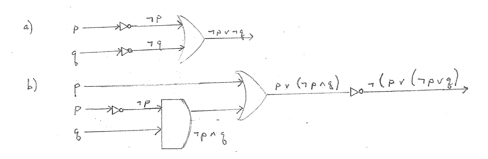

l = system locked.
n = new messages queued.
f = system functions normally.
m = messages sent to buffer.
Then the symbolizations are:
Try to make all 5 true; if you can the set is consistent; if you cannot, the set is inconsistent.
In order to make 5 true, we have to make m false, and we have to make m false is 3 and 4, too.
In order to make 4 true (with m false), we have to make not l false, which means making l true; and we have to make l true in 1 and 2, too.
In order to make 3 true (with m false), we have to make not n false, which means making n true; and we have to make n true in 1, too.
As we have made n true in 1, 1 is true no matter what not l is.
And in order to make 2 true (with l true, we have to make f false.
OR you can do a 16-line truth table, and you will find that the following assignment of truth values make all of 1 through 5 true: l = T, f = F, n = T, m = F.
Hence, the set of sentences is consistent.
